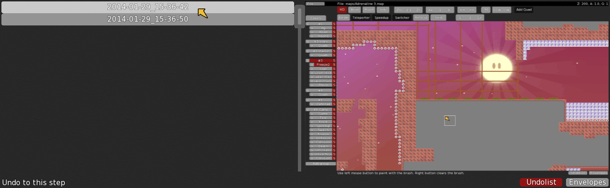

bind s +showhookcoll to see where hook will hit exactly
Official DDNet Tiles by 645654 & Phacrum
Display teams in scoreboard
Render players in other teams half transparent (/showothers)
Undo function in editor (initial work by MAP94)

Better and faster server list refresh (by Pata94)
64 player client (initial work by eeeee)
More advanced automapper rules and some for ddnet-tiles, round-tiles, grass_main (Freeze, Unfreeze, Tele) and fadeout Source (set by mapper)Automapped (grass_main)Automapped (fadeout)Automapped (round-tiles)
Maps load 30 times faster than in DDRace client
AntiPing (Prediction for grenades and other tees)
More friends and favorites
Better looking entities to play with
Vote window gets moved to scoreboard after you voted